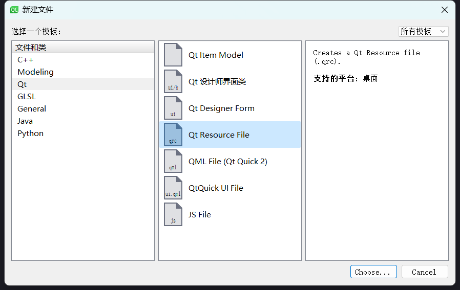
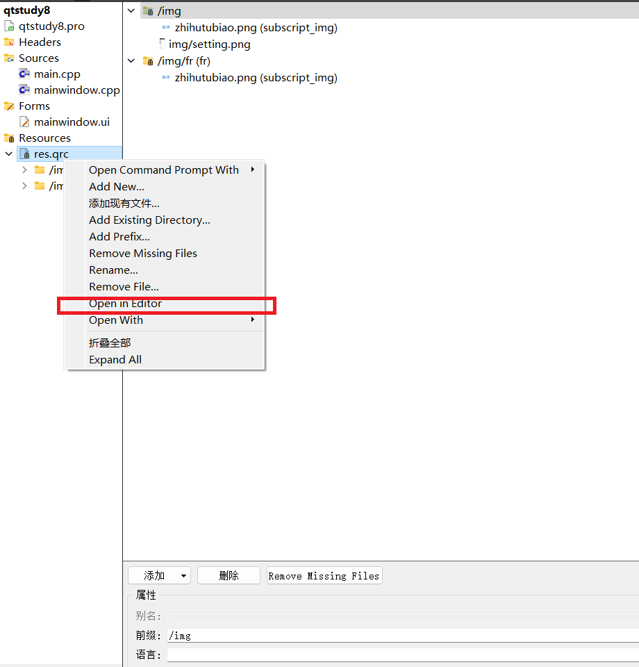
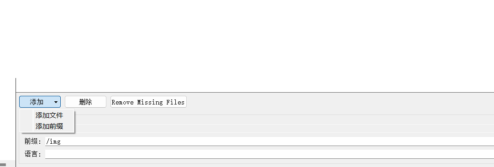

Qt资源系统
1.Qt资源系统
Qt资源管理系统是一种不依赖平台的独特机制，用于在应用程序的可执行文件中存储二进制文件。出于不同的目的（防止图标文件丢失或恶意更改），开发者不希望本程序的资源文件被更改。因此，把资源文件存储在可执行文件中，这就是静态加载资源方式。静态方式的缺点就是编译出的可执行文件容量会增加。为避免这一问题，将资源文件以二进制形式单独存储在一个文件中，这就是动态加载资源方式。
Qt 资源系统是基于qmake、 rcc(Qt’s resource compiler), and QFile而实现的。
2. 资源收集文件.qrc
那编译器又是如何知道哪些资源文件需要加载到可执行文件中的呢？资源收集文件.qrc闪亮登场。
1 | <RCC> |
.qrc文件是基于xml格式的系统资源配置文件。该文件的file标签指出了项目所需要的资源文件，可以通过alias标签给文件分配资源名称,lang标签是语言标签，可以根据 QLocale::system().name() 返回的语言值选择加载的同名资源文件。指定的路径是相对于包含.qrc文件的目录的,请注意，列出的资源文件必须与.qrc文件位于同一目录或其子目录之一。
项目中访问加载资源有两种方式：
- 文件路径形式：/img/subscript_img
- URL形式:qrc:///img/subscript_img
3.创建资源收集文件.qrc
创建资源收集文件最简单的方式就是使用Qt Creator创建。
首先需要创建一个Qt Resource File；
 然后，右键打开；
 最后，先添加标签，再添加文件。
 使用Qt Creator创建和添加资源文件虽然方便，但是在面对大批量的资源文件时却显得力不从心，这就需要手写了。我的建议是熟悉qrc的规则，然后使用代码批量化在某一目录下的获取资源文件，剩下的就是字符串操作了。
4.加载资源
加载资源有两种，一种是直接将资源数据存储在可执行文件中（静态方式），另一种是将资源数据存储在单独的二进制文件中并由可执行文件调用（动态方式）。
4.1静态方式
除了用 Qt Creator 在工程中添加 qrc 文件以外，需要在 pro 文件中加入 qrc 文件以便 qmake 能识别资源文件，一般这步会被自动添加。
pro文件
1 | RESOURCES += \ |
4.2动态方式
不会（待填坑）。